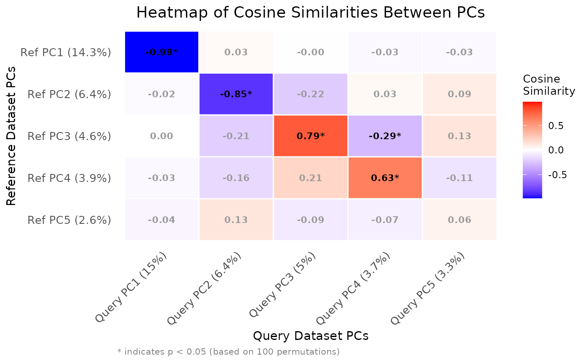

R/comparePCA.R, R/plot.comparePCAObject.R
comparePCA.RdThis function compares the principal components (PCs) obtained from separate PCA on reference and query datasets for a single cell type using either cosine similarity or correlation.
The S3 plot method generates a heatmap to visualize the similarities between
principal components from the output of the comparePCA function.
comparePCA(
query_data,
reference_data,
query_cell_type_col,
ref_cell_type_col,
pc_subset = 1:5,
n_top_vars = 50,
metric = c("cosine", "correlation"),
correlation_method = c("spearman", "pearson"),
n_permutations = 0
)
# S3 method for class 'comparePCAObject'
plot(
x,
show_values = TRUE,
show_significance = TRUE,
significance_threshold = 0.05,
color_limits = NULL,
...
)A SingleCellExperiment object containing numeric expression matrix for the query cells.
A SingleCellExperiment object containing numeric expression matrix for the reference cells.
The column name in the colData of query_data that identifies the cell types.
The column name in the colData of reference_data that identifies the cell types.
A numeric vector specifying the subset of principal components (PCs) to compare. Default is the first five PCs.
An integer indicating the number of top loading variables to consider for each PC. Default is 50.
The similarity metric to use. It can be either "cosine" or "correlation". Default is "cosine".
The correlation method to use if metric is "correlation". It can be "spearman" or "pearson". Default is "spearman".
Number of permutations for statistical significance testing. If 0, no permutation test is performed. Default is 0.
A comparePCAObject output from the comparePCA function.
Logical, whether to display similarity values on the heatmap. Default is TRUE.
Logical, whether to display significance indicators (requires permutation test). Default is TRUE.
Numeric, p-value threshold for significance. Default is 0.05.
Numeric vector of length 2 specifying color scale limits. If NULL, uses data range.
Additional arguments passed to the plotting function.
A list containing:
A matrix comparing the principal components of the reference and query datasets.
A list containing the top loading variables for each PC pair comparison.
A matrix of permutation p-values (if n_permutations > 0).
The similarity metric used.
Number of top variables used.
A ggplot object representing the heatmap of similarities.
This function compares the PCA results between the reference and query datasets by computing cosine similarities or correlations between the loadings of top variables for each pair of principal components. It first extracts the PCA rotation matrices from both datasets and identifies the top variables with highest loadings for each PC. Then, it computes the cosine similarities or correlations between the loadings of top variables for each pair of PCs using vectorized operations for improved performance. The resulting matrix contains the similarity values, where rows represent reference PCs and columns represent query PCs.
The S3 plot method creates an enhanced heatmap visualization with options to display statistical significance and similarity values. The heatmap uses a blue-white-red color gradient for similarity values, and optionally overlays significance indicators.
plot.comparePCAObject
comparePCA
# Load libraries
library(scran)
library(scater)
# Load data
data("reference_data")
data("query_data")
# Extract CD4 cells
ref_data_subset <- reference_data[, which(reference_data$expert_annotation == "CD4")]
query_data_subset <- query_data[, which(query_data$expert_annotation == "CD4")]
# Selecting highly variable genes (can be customized by the user)
ref_top_genes <- getTopHVGs(ref_data_subset, n = 500)
query_top_genes <- getTopHVGs(query_data_subset, n = 500)
# Intersect the gene symbols to obtain common genes
common_genes <- intersect(ref_top_genes, query_top_genes)
ref_data_subset <- ref_data_subset[common_genes,]
query_data_subset <- query_data_subset[common_genes,]
# Run PCA on datasets separately
ref_data_subset <- runPCA(ref_data_subset)
query_data_subset <- runPCA(query_data_subset)
# Call the PCA comparison function
similarity_mat <- comparePCA(query_data = query_data_subset,
reference_data = ref_data_subset,
query_cell_type_col = "expert_annotation",
ref_cell_type_col = "expert_annotation",
pc_subset = 1:5,
n_top_vars = 50,
metric = c("cosine", "correlation")[1],
correlation_method = c("spearman", "pearson")[1],
n_permutation = 100)
#> Performing 100 permutations for significance testing...
# Create the heatmap
plot(similarity_mat, show_significance = TRUE)
